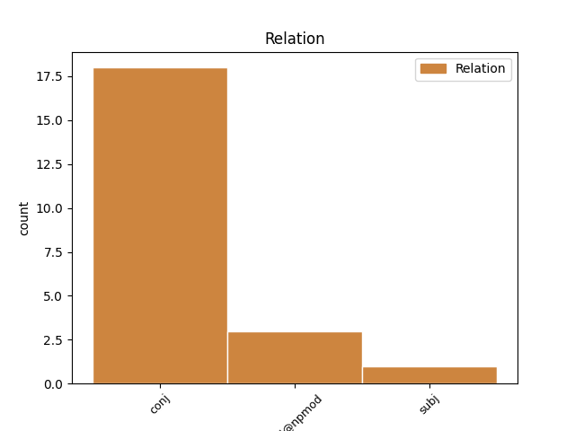
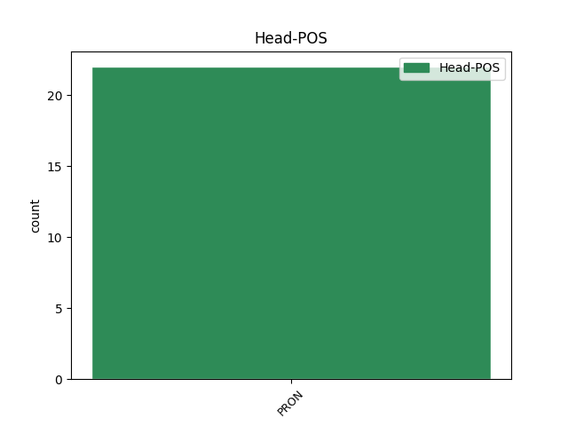
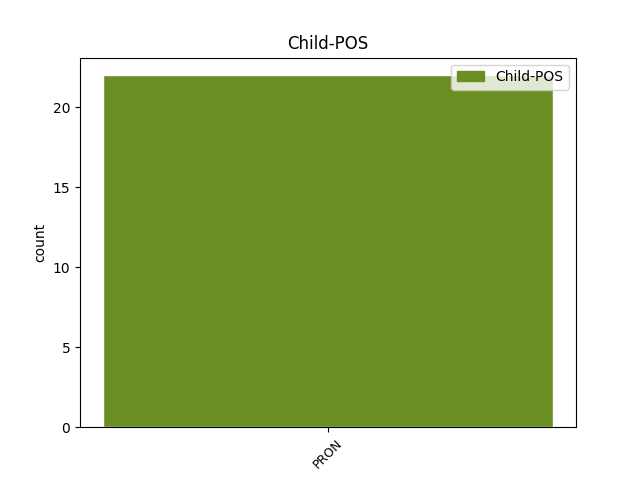

Distribution of features within this leaf



Agreement Rules sorted by frequency.
- When the dependent token is the conjunct(conj) of the head token, and the head token is PRON
1 1 _ _ _ _ 0 _ _ _
2 ) _ _ _ _ 0 _ _ _
3 When _ _ _ _ 0 _ _ _
4 you _ _ _ _ 0 _ _ _
5 get _ _ _ _ 0 _ _ _
6 the _ _ _ _ 0 _ _ _
7 bird _ _ _ _ 0 _ _ _
8 , _ _ _ _ 0 _ _ _
9 place _ _ _ _ 0 _ _ _
10 him _ _ _ _ 0 _ _ _
11 or _ _ _ _ 0 _ _ _
12 her she PRON PRP Case=Acc|Gender=Fem|Number=Sing|Person=3|PronType=Prs 0 _ _ _
13 or _ _ _ _ 0 _ _ _
14 them they PRON PRP Case=Acc|Number=Plur|Person=3|PronType=Prs 12 conj _ _
15 in _ _ _ _ 0 _ _ _
16 the _ _ _ _ 0 _ _ _
17 cage _ _ _ _ 0 _ _ _
18 . _ _ _ _ 0 _ _ _
1 Their _ _ _ _ 0 _ _ _
2 chauvinisms _ _ _ _ 0 _ _ _
3 got _ _ _ _ 0 _ _ _
4 to _ _ _ _ 0 _ _ _
5 the _ _ _ _ 0 _ _ _
6 point _ _ _ _ 0 _ _ _
7 that _ _ _ _ 0 _ _ _
8 even _ _ _ _ 0 _ _ _
9 they they PRON PRP Case=Nom|Number=Plur|Person=3|PronType=Prs 0 _ _ _
10 themselves themselves PRON PRP Number=Plur|Person=3|PronType=Prs 9 mod@npmod _ _
11 hated _ _ _ _ 0 _ _ _
12 each _ _ _ _ 0 _ _ _
13 other _ _ _ _ 0 _ _ _
14 . _ _ _ _ 0 _ _ _
1 It it PRON PRP Case=Nom|Gender=Neut|Number=Sing|Person=3|PronType=Prs 7 subj _ _
2 is _ _ _ _ 0 _ _ _
3 like _ _ _ _ 0 _ _ _
4 a _ _ _ _ 0 _ _ _
5 mini _ _ _ _ 0 _ _ _
6 tablet _ _ _ _ 0 _ _ _
7 itself itself PRON PRP Gender=Neut|Number=Sing|Person=3|PronType=Prs 0 _ _ _
8 ! _ _ _ _ 0 _ _ _
Disagree Examples:
1 They _ _ _ _ 0 _ _ _
2 trust _ _ _ _ 0 _ _ _
3 you you PRON PRP Case=Acc|Person=2|PronType=Prs 0 _ _ _
4 and _ _ _ _ 0 _ _ _
5 me I PRON PRP Case=Acc|Number=Sing|Person=1|PronType=Prs 3 conj _ _
6 to _ _ _ _ 0 _ _ _
7 be _ _ _ _ 0 _ _ _
8 befuddled _ _ _ _ 0 _ _ _
9 by _ _ _ _ 0 _ _ _
10 their _ _ _ _ 0 _ _ _
11 actions _ _ _ _ 0 _ _ _
12 , _ _ _ _ 0 _ _ _
13 while _ _ _ _ 0 _ _ _
14 they _ _ _ _ 0 _ _ _
15 " _ _ _ _ 0 _ _ _
16 do _ _ _ _ 0 _ _ _
17 as _ _ _ _ 0 _ _ _
18 they _ _ _ _ 0 _ _ _
19 wilt _ _ _ _ 0 _ _ _
20 " _ _ _ _ 0 _ _ _
21 . _ _ _ _ 0 _ _ _
1 They _ _ _ _ 0 _ _ _
2 trust _ _ _ _ 0 _ _ _
3 you you PRON PRP Case=Acc|Person=2|PronType=Prs 0 _ _ _
4 and _ _ _ _ 0 _ _ _
5 me I PRON PRP Case=Acc|Number=Sing|Person=1|PronType=Prs 3 conj _ _
6 to _ _ _ _ 0 _ _ _
7 be _ _ _ _ 0 _ _ _
8 befuddled _ _ _ _ 0 _ _ _
9 by _ _ _ _ 0 _ _ _
10 their _ _ _ _ 0 _ _ _
11 actions _ _ _ _ 0 _ _ _
12 , _ _ _ _ 0 _ _ _
13 while _ _ _ _ 0 _ _ _
14 they _ _ _ _ 0 _ _ _
15 " _ _ _ _ 0 _ _ _
16 do _ _ _ _ 0 _ _ _
17 as _ _ _ _ 0 _ _ _
18 they _ _ _ _ 0 _ _ _
19 wilt _ _ _ _ 0 _ _ _
20 . _ _ _ _ 0 _ _ _
21 " _ _ _ _ 0 _ _ _
1 Meagan _ _ _ _ 0 _ _ _
2 does _ _ _ _ 0 _ _ _
3 have _ _ _ _ 0 _ _ _
4 a _ _ _ _ 0 _ _ _
5 couple _ _ _ _ 0 _ _ _
6 of _ _ _ _ 0 _ _ _
7 big _ _ _ _ 0 _ _ _
8 things _ _ _ _ 0 _ _ _
9 on _ _ _ _ 0 _ _ _
10 the _ _ _ _ 0 _ _ _
11 weekend _ _ _ _ 0 _ _ _
12 in _ _ _ _ 0 _ _ _
13 January _ _ _ _ 0 _ _ _
14 -- _ _ _ _ 0 _ _ _
15 National _ _ _ _ 0 _ _ _
16 Charity _ _ _ _ 0 _ _ _
17 League _ _ _ _ 0 _ _ _
18 Senior _ _ _ _ 0 _ _ _
19 Presentation _ _ _ _ 0 _ _ _
20 ( _ _ _ _ 0 _ _ _
21 big _ _ _ _ 0 _ _ _
22 dance _ _ _ _ 0 _ _ _
23 that _ _ _ _ 0 _ _ _
24 she she PRON PRP Case=Nom|Gender=Fem|Number=Sing|Person=3|PronType=Prs 0 _ _ _
25 and _ _ _ _ 0 _ _ _
26 I I PRON PRP Case=Nom|Number=Sing|Person=1|PronType=Prs 24 conj _ _
27 are _ _ _ _ 0 _ _ _
28 committed _ _ _ _ 0 _ _ _
29 to _ _ _ _ 0 _ _ _
30 help _ _ _ _ 0 _ _ _
31 with _ _ _ _ 0 _ _ _
32 ) _ _ _ _ 0 _ _ _
33 , _ _ _ _ 0 _ _ _
34 the _ _ _ _ 0 _ _ _
35 Bearkadette _ _ _ _ 0 _ _ _
36 Ball _ _ _ _ 0 _ _ _
37 and _ _ _ _ 0 _ _ _
38 a _ _ _ _ 0 _ _ _
39 winter _ _ _ _ 0 _ _ _
40 party _ _ _ _ 0 _ _ _
41 for _ _ _ _ 0 _ _ _
42 Cotillion _ _ _ _ 0 _ _ _
43 . _ _ _ _ 0 _ _ _
1 I _ _ _ _ 0 _ _ _
2 think _ _ _ _ 0 _ _ _
3 the _ _ _ _ 0 _ _ _
4 first _ _ _ _ 0 _ _ _
5 step _ _ _ _ 0 _ _ _
6 is _ _ _ _ 0 _ _ _
7 a _ _ _ _ 0 _ _ _
8 call _ _ _ _ 0 _ _ _
9 between _ _ _ _ 0 _ _ _
10 yourself yourself PRON PRP Case=Acc|Number=Sing|Person=2|PronType=Prs|Reflex=Yes 0 _ _ _
11 , _ _ _ _ 0 _ _ _
12 me I PRON PRP Case=Acc|Number=Sing|Person=1|PronType=Prs 10 conj _ SpaceAfter=No
13 , _ _ _ _ 0 _ _ _
14 Mark _ _ _ _ 0 _ _ _
15 Stubley _ _ _ _ 0 _ _ _
16 and _ _ _ _ 0 _ _ _
17 Mike _ _ _ _ 0 _ _ _
18 Indivero _ _ _ _ 0 _ _ _
19 . _ _ _ _ 0 _ _ _
1 One _ _ _ _ 0 _ _ _
2 of _ _ _ _ 0 _ _ _
3 my _ _ _ _ 0 _ _ _
4 most _ _ _ _ 0 _ _ _
5 cherished _ _ _ _ 0 _ _ _
6 dualities _ _ _ _ 0 _ _ _
7 is _ _ _ _ 0 _ _ _
8 the _ _ _ _ 0 _ _ _
9 understanding _ _ _ _ 0 _ _ _
10 that _ _ _ _ 0 _ _ _
11 we _ _ _ _ 0 _ _ _
12 are _ _ _ _ 0 _ _ _
13 both _ _ _ _ 0 _ _ _
14 autonomous _ _ _ _ 0 _ _ _
15 individuals _ _ _ _ 0 _ _ _
16 with _ _ _ _ 0 _ _ _
17 the _ _ _ _ 0 _ _ _
18 power _ _ _ _ 0 _ _ _
19 to _ _ _ _ 0 _ _ _
20 shape _ _ _ _ 0 _ _ _
21 our _ _ _ _ 0 _ _ _
22 personal _ _ _ _ 0 _ _ _
23 destinies _ _ _ _ 0 _ _ _
24 and _ _ _ _ 0 _ _ _
25 at _ _ _ _ 0 _ _ _
26 the _ _ _ _ 0 _ _ _
27 same _ _ _ _ 0 _ _ _
28 time _ _ _ _ 0 _ _ _
29 we _ _ _ _ 0 _ _ _
30 are _ _ _ _ 0 _ _ _
31 all _ _ _ _ 0 _ _ _
32 one _ _ _ _ 0 _ _ _
33 , _ _ _ _ 0 _ _ _
34 that _ _ _ _ 0 _ _ _
35 there _ _ _ _ 0 _ _ _
36 is _ _ _ _ 0 _ _ _
37 no _ _ _ _ 0 _ _ _
38 separation _ _ _ _ 0 _ _ _
39 between _ _ _ _ 0 _ _ _
40 you you PRON PRP Case=Acc|Person=2|PronType=Prs 0 _ _ _
41 and _ _ _ _ 0 _ _ _
42 I I PRON PRP Case=Nom|Number=Sing|Person=1|PronType=Prs 40 conj _ SpaceAfter=No
43 , _ _ _ _ 0 _ _ _
44 we _ _ _ _ 0 _ _ _
45 are _ _ _ _ 0 _ _ _
46 all _ _ _ _ 0 _ _ _
47 together _ _ _ _ 0 _ _ _
48 in _ _ _ _ 0 _ _ _
49 this _ _ _ _ 0 _ _ _
50 thing _ _ _ _ 0 _ _ _
51 called _ _ _ _ 0 _ _ _
52 life _ _ _ _ 0 _ _ _
53 , _ _ _ _ 0 _ _ _
54 we _ _ _ _ 0 _ _ _
55 human _ _ _ _ 0 _ _ _
56 beings _ _ _ _ 0 _ _ _
57 , _ _ _ _ 0 _ _ _
58 the _ _ _ _ 0 _ _ _
59 birds _ _ _ _ 0 _ _ _
60 and _ _ _ _ 0 _ _ _
61 the _ _ _ _ 0 _ _ _
62 tress _ _ _ _ 0 _ _ _
63 , _ _ _ _ 0 _ _ _
64 the _ _ _ _ 0 _ _ _
65 rocks _ _ _ _ 0 _ _ _
66 and _ _ _ _ 0 _ _ _
67 the _ _ _ _ 0 _ _ _
68 sky _ _ _ _ 0 _ _ _
69 , _ _ _ _ 0 _ _ _
70 all _ _ _ _ 0 _ _ _
71 of _ _ _ _ 0 _ _ _
72 it _ _ _ _ 0 _ _ _
73 . _ _ _ _ 0 _ _ _